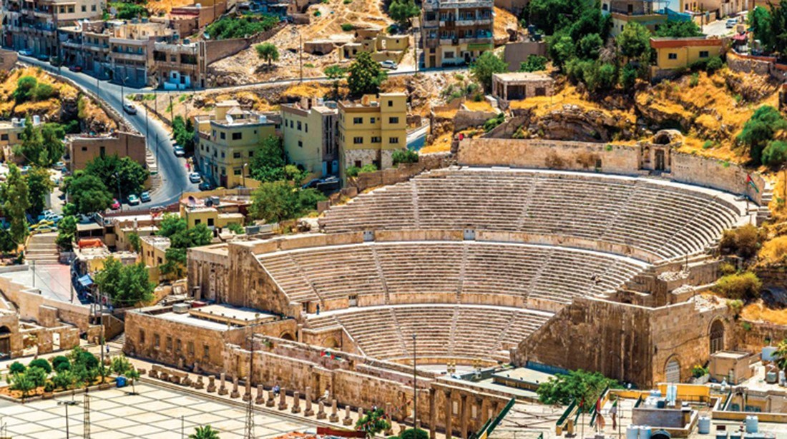
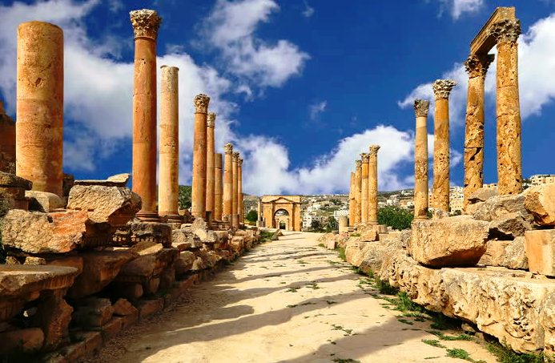
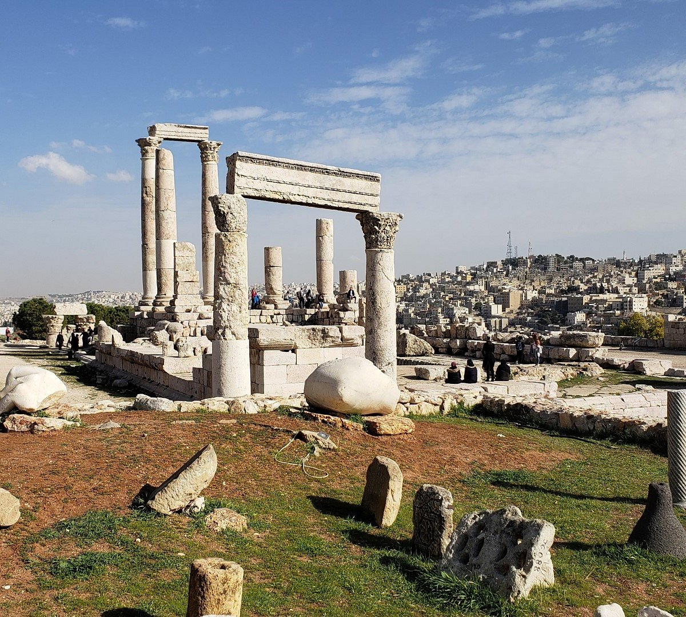

آثار عمّان
تتميز مدينة عمّان بتنوع آثارها التاريخية التي تعكس تاريخاً عريقاً يمتد عبر العصور. هنا نعرض بعضاً من أبرز المعالم الأثرية في عمّان:

المدرج الروماني
المدرج الروماني هو أحد أشهر المعالم الأثرية في عمّان، ويعود تاريخه إلى القرن الثاني الميلادي.

جبل القلعة
يعتبر جبل القلعة من أهم المواقع الأثرية في عمّان، ويحتوي على بقايا معابد وأعمدة رومانية وإغريقية.

معبد هرقل
يقع معبد هرقل في جبل القلعة، وهو واحد من أبرز المعالم الرومانية في المنطقة.